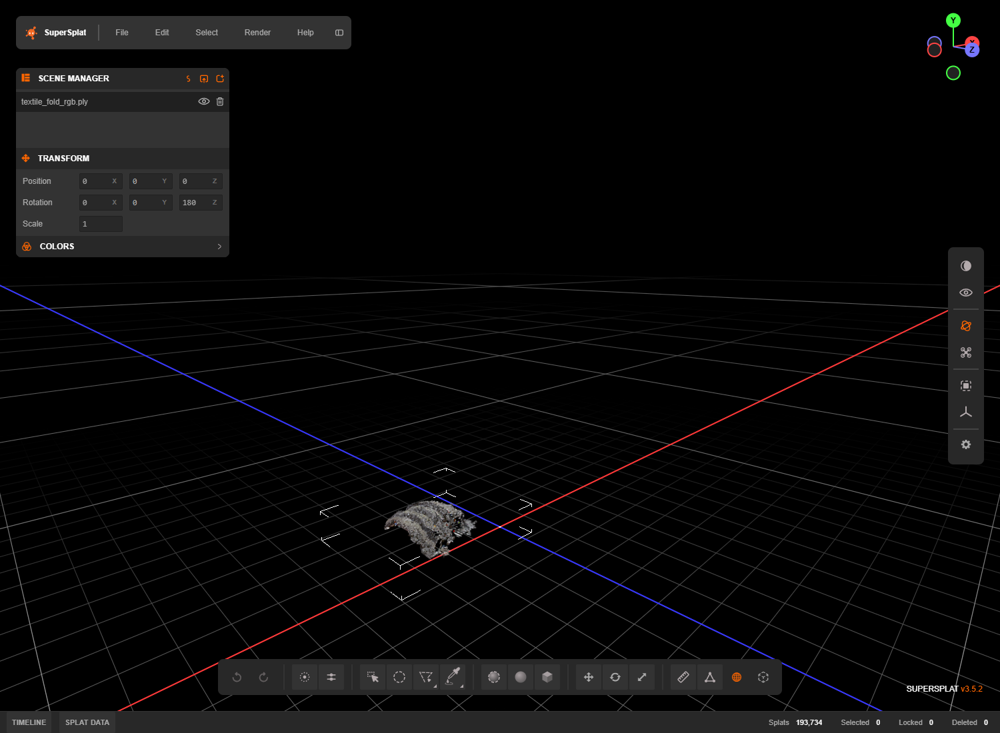

STAGE 18 · import passed · 2026-10-08T21:49:50.3746878Z
First actual RGB PLY import in online SuperSplat
The full-quality folded-cloth PLY imports successfully with 193,734 Gaussians, including context04. It initially appears small because the default editor camera frames metre-scale scenes differently. This verifies actual importer compatibility; the following steps frame it for inspection.

Genuine local browser screenshot; see accompanying capture metadata